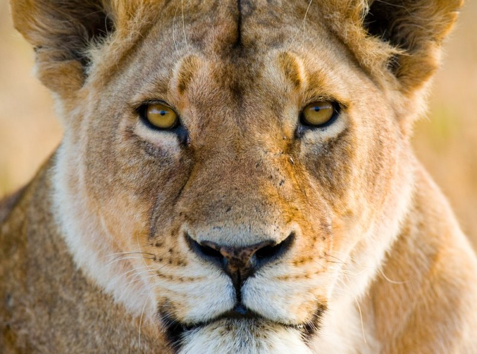

작성팁
태그에 class 속성과 id속성을 부여할 수 있다
class 속성 : 여러개의 요소에 같은 형식의 스타일을 적용시키고자 할 때, css에서 .클래스명으로 지정한다.
id 속성 : 여러개의 요소 중 특정요소로 지정하고자할 때, 특별한 스타일을 지정하고자 할 때
css 에서 #id명 으로 사용한다.
box-sizing : 브라우저의 크기를 조절할 때 내용물의 크기도 함께 조절하기 위해 사용, border-box - 콘텐츠, 패딩, 보더를 포함한 크기, content-box - 콘텐츠 크기만.
width : calc(30% - 1%) : 가로길이의 기준을 30%로 설정하고 브라우저의 크기가 줄어들 때마다 1%씩 감산하여 조절.
calc()는 css 내부함수로 속성의 값으로 계산식을 사용하기 위해 사용.
사자

아프리카와 인도에 서식하는 식육목(食肉目) 고양잇과 포유류.
북아프리카와 중동, 서아시아, 유럽, 아라비아에서도 과거엔 서식했었으나 유럽 지역에서는 기원전부터 씨가 말랐고, 인도를
제외한 아시아 지역에서도 19~20세기부터 하나둘씩 사라져갔다.[12] 북아프리카에서도 1920년 모로코에서 사살되어 이
지역들의 야생 사자는 멸종된 상태이다. 지금은 대부분이 남아프리카 사바나 일대에 서식하고 있고, 남서아프리카의 나미비아
사막[13]에 밀렵으로 멸종된 줄 알았던 사막 사자가 살아남아 있으며 사헬 지대에도 일부 살아남아 있다. 인도의 기르숲이란
곳에도 사자가 약간 남아있기는 하다. 현재도 개체수가 계속 감소 중인 사자기에, 나중엔 일부 보호구역에서 소수만이
남을것이다. 간지나는 비주얼과 강인한 사냥 능력으로 오랫동안 '백수의 왕'으로 불리우며 왕의 상징으로 여겨지는 등 인기를
누려온 동물이다. 동양권에서도 호랑이와 쌍벽으로 여겨지지만 호랑이와 달리 또한 모든 동물들 중에서 유독 사자(獅子)에게만
공자(孔子), 맹자(孟子)처럼 자(子)를 붙이는 걸 보면 사자의 위상을 알 수 있다.